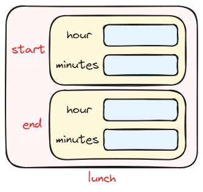

Lecture 1: Structures
User-Defined Types
- Recall that a type defines a set of possible values and a set of operations defined on them.
Example
To illustrate the above definition, consider the following data types :
| Data type | The set of possible values | The set of operations |
|---|---|---|
int |
From -2,147,483,648 up to 2,147,483,647 | *, /, %, &, +, >, ==, etc. |
double |
From 1.7E-308 to 1.7E+308 | *, /, &, +, >, ==, etc. |
Notice that the operation % is not defined in double. If you try to compile the expression 4.0 % 3.0, the compiler will emit the following error message: error: invalid operands of types 'double' and 'double' to 'operator%'
- A type is called built-in if the compiler knows how to represent objects of the type and which operations can be done on it without being told by a programmer in source code.
- Types that are not built-in are called user-defined types (UDTs).
- In C++, there are two ways to build UDTs:
- by using structures (or classes)
- by using enumeration
Why do we need to build a new type?
Built-in types are too primitives. It is desirable that types can directly represent our ideas in code. When we write code, the ideal is to represent our ideas directly in our code so that we, our colleagues, and the compiler can understand what we wrote. For example, let us assume that we have a type called Date to represent a date in the form dd/mm/yyyy. Which program do you consider more clearer to understand?
First code:
int d1 = 10 , m1 = 3, y1 = 2020; // first date 10/3/2020
int d2 = 30 , m2 = 4, y2 = 2022; // second date 30/4/2022
int diff = subtract(d2 , m2 , y2 , d1 , m1 , y1);
if ( diff >= 0)
cout << " The number of days = " << diff << endl ;
else
cout << " The number of days = " << subtract(d1 , m1 , y1 , d2 , m2 , y2) << endl ;
Second code:
Date d1 {10 , 3, 2020}; // first date 10/3/2020
Date d2 {30 , 4, 2022}; // second date 30/4/2022
if (d2 >= d1)
cout << " The number of days = " << d2 - d1 << endl ;
else
cout << " The number of days = " << d1 - d2 << endl ;
The second code allows us to directly represent our ideas more than the first code.
- We say a user-defined type is a "good" type, if it helps us to express our ideas clearly. The help comes in two forms:
 Representation: A type knows how to represent the data needed in an object.
Representation: A type knows how to represent the data needed in an object.- Operations: A type knows what operations can be applied to objects.
The main objective of this course is to learn how to build a good data type
Structures
- Most often, we want to create a new type by bundling (aggregating) serveral related information about one thing under one type. For example, we need a type
Datethat bundles three integers: day, month and year. - The simplest way is to use structure type.
- A structure is a user-defined type. It is composed of built–in types and/or other user-defined types. The parts used to define the structure are called members. A structure has zero or more members.
- Let us define a type
Timethat bundles two integers:hourandminutes.
// a structure with two members to represent time
struct Time
{
int hour;
int minutes;
};
- The structure definition above is known as type definition. The keyword
structannounces that this is a structure–type definition. The identifierTimeis the name of the structure type, which is known as the structure tag. - The structure tag can be any legal identifier that is not a keyword.
- The identifiers declared inside the braces,
{}, are called members. - The structure-type definition must end with a semicolon.
The Dot Operator
- We can define variables of structure types just like we do for built-in types.
-
The semantics of the above example is as follows:
- This is a definition statement. It creates two objects in the following order:
- The first object is of type
int, and it will be namedhour - The second object is of type
int, and it will be namedminutes
- The first object is of type
- The aggregated structure will be named
start
- This is a definition statement. It creates two objects in the following order:
-
We can visualize
startas a package that consists of two items:hourandminutes -
Let us consider another example:
- In this definition statement, the compiler will create two packages (or structures) and each package has its own items as depicted in the diagram.
{kind=link}
- The member objects are referenced by giving the name of the structure variable followed by a dot and then the member name. For example,
start.hour, which represents the object named byhourinside the packagestart.
The . Operator
The dot operator is used to specify a member variable of a structure variable.
SYNTAX
<Structure_Variable_Name>.<Member_Variable_Name>
- Let us consider our first program. We will call this program Time Program:
Time Program version (1.0)
The elapsed time of an event is the amount of time that has passed between the commencement and the completion of an event. If an event starts at 12:00 and ends at 14:00, the elapsed time is the time that has passed between 12:00 and 14:00, which is 2 hours. We assume here the times are in the 24-hour time.
In this example, we write a program that reads the starting time and the ending time of an event in 24-hour format within the same day. Then, it computes the elapsed time and displays the result on the screen monitor.
INPUT: starting and ending times
PROCESS: Compute the elapsed time
OUTPUT: elapsed time
Therefore, we need to declare the following variables:
The elapsed time is computed by subtracting the starting time from the ending time. To obtain the result correctly, we need to determine whether the number of minutes is larger in the starting time or the ending time.-
If the ending time has a larger number of minutes: Subtract normally. For example:
\[ \begin{array}{rrr} & 13 &: 45 \\ -& 9 &: 10 \\ \hline & 4 &: 35 \end{array} \] -
If the starting time has a larger number of minutes: Add 60 to the number of minutes in the ending time, and subtract 1 hour from the hour portion of the ending time. Then, subtract normally. For example:
\[ \begin{array}{rrr} & 13 &: 10 \\ -& 9 &: 45 \\ \hline & & \end{array} \;\; \Rightarrow \;\; \begin{array}{rrr} & 12 &: 70 \\ -& 9 &: 45 \\ \hline & 3 &: 25 \end{array} \]
We translate the above logic into C++ as follows:
if (end.minutes >= start.minutes) {
elap.minutes = end.minutes - start.minutes;
elap.hour = end.hour - start.hour;
}
else {
elap.minutes = (end.minutes + 60) - start.minutes;
elap.hour = (end.hour - 1) - start.hour;
}
The final task is to print out the elapsed time in HH:MM format:
Now, we can write the whole program:
#include <iostream>
#include <iomanip>
using namespace std;
struct Time // UDT
{
int hour;
int minutes;
};
int main()
{
char dummy; // to read ':'
Time start; // the starting time
Time end; // the ending time
cout << "Enter the starting time (HH:MM): ";
cin >> start.hour >> dummy >> start.minutes;
cout << "Enter the ending time (HH:MM): ";
cin >> end.hour >> dummy >> end.minutes;
Time elap; // The elapsed time
if (end.minutes >= start.minutes) {
elap.minutes = end.minutes - start.minutes;
elap.hour = end.hour - start.hour;
}
else {
elap.minutes = (end.minutes + 60) - start.minutes;
elap.hour = (end.hour - 1) - start.hour;
}
cout << "The elapsed time is ";
cout << setfill('0') << setw(2) << elap.hour << ':' << setw(2) << elap.minutes << endl;
return 0;
}
The Assignment Statement
-
The compiler knows how to assign a structure variable to another structure variable of the same type.
-
The compiler simply moves (as a copy) the rvalue of each member variable in the RHS and stores it to the lvalue of its corresponding member variable in LHS.
-
Now, consider the following assignment statement:
Here the compiler assigns the value ofend.hourtoelap.hourand assgins the value ofend.minutestoelap.minutes, as if the compiler performs the following statements:
Default Structure Operations
By default, the compiler ONLY knows how to evaluate the assignment operator = for structure types. You cannot perform other operations directly on structure variables. The following statement will cause an error:
For now, to compare two structures, you must compare the individual members, as shown in the following code:
Structure Initialization
-
A structure variable can be initialized using list initialization, direct initialization or copy initialization. Let us consider the following examples:
Time t1 = {10, 25}; // list-initializer -- C ++98 Time t2 {10, 25}; // list-initializer -- since C ++11 Time t3 = {.hour=10, .minute=25}; // designated list-initializer -- since C ++20 Time t4 {.hour=10, .minute=25}; // designated list-initializer -- since C ++20 Time t5 = t1; // copy-initializer Time t6 (t1); // direct-initializer -
The following initialization operations are valid:
-
The following initialization operations are NOT valid:
-
A member variable can have a default initializer as shown below:
struct Time { int hour = 23; // default member initializer int minute = 59; // default member initializer }; int main () { Time t1; // .hour = 23 , .minute = 59 Time t2 {}; // .hour = 23 , .minute = 59 Time t3 = {.minute=0}; // .hour = 23 , .minute = 0 Time t4 = {10}; // .hour = 10 , .minute = 59 . . }
Time Program version (1.1)
In this example, we modify the code that computes the elapsed time. Our new logic is:
- Set the elapsed time equals to the ending time.
- Add 60 to the number of minutes in the elapsed time and subtract 1 hour from the hour portion of the elapsed time ONLY when the number of minutes in the starting time is larger than the number of minutes in the elapsed time.
- Subtract the starting time from the elapsed time.
We translate the above logic as follows:
Time elap = end; // this is a copy initialization
if (start.minutes > elap.minutes) {
elap.minutes += 60;
elap.hour --;
}
elap.minutes -= start.minutes;
elap.hour -= start.hour;
Here is the complete Time Program version (1.1)
#include <iostream>
#include <iomanip>
using namespace std;
struct Time // UDT
{
int hour;
int minutes;
};
int main()
{
char dummy; // to read ':'
Time start; // the starting time
Time end; // the ending time
cout << "Enter the starting time (HH:MM): ";
cin >> start.hour >> dummy >> start.minutes;
cout << "Enter the ending time (HH:MM): ";
cin >> end.hour >> dummy >> end.minutes;
Time elap = end; // The elapsed time
if (start.minutes > elap.minutes) {
elap.minutes += 60;
elap.hour--;
}
elap.minutes -= start.minutes;
elap.hour -= start.hour;
cout << "The elapsed time is ";
cout << setfill('0') << setw(2) << elap.hour << ':' << setw(2) << elap.minutes << endl;
return 0;
}
Self-Check
-
Write a structure definition to hold the following data about a banking account:
- Account Number (string object)
- Account Balance (double)
- Account Type (int)
- Average Monthly Balance (double)
-
Given the following struct definition:
declarexto have this structure type. Initialize the members ofx, memberband memberc, to the values 1 and 2, respectively.
Structures as Function Arguments
- Like other variables, structure variables can be passed as arguments to functions, using both call-by-value or call-by-reference.
Time Program version (2.0)
In this example, we are going to define two functions:
subtractTime(), andprintTime().
If \(t_1\) and \(t_2\) are two Time variables in HH:MM format, then the function subtractTime(t2, t1) will subtract \(t_1\) from \(t_2\) to get a new time \(r\) (where \(r = t_2 - t_1\)). As such, the function subtractTime() takes two arguments of type Time and returns a new object of type Time. The function prototype shall be:
And, here is the function defintition based on Time Program version (1.1):
Time subtractTime (Time t2, Time t1)
{
Time elap = t2;
if (t1.minutes > elap.minutes) {
elap.minutes += 60;
elap.hour--;
}
elap.hour -= t1.hour;
elap.minutes -= t1.minutes;
return elap;
}
For the second function printTime(), it takes one argument of type Time and prints it out to screen monitor in HH:MM format. So, the prototype of the function becomes as follows:
As for the function definition, we may write it as follows:
void printTime (Time t)
{
std::cout
<< std::setfill('0')
<< std::setw(2) << t.hour
<< ':'
<< std::setw(2) << t.minutes;
}
Now, here is the Time Program version (2.0):
- Let us concentrate on the function calls, the highlighted lines, inside the
mainfunction. - At Line 26, the funtion
subtractTime()is called as part of evaluating the assignment statement. Let us track exactly the execution of this statement.- When the function is called, the control transfers from Line 26 to Line 34.
- The parameters are copy-initialized as follows:
- At line 36, the variable
elapis constructed and copy-initialized fromt2. - Next, the
ifstatement is executed (Lines 38-41) followed by two assignments (Lines 42 and 43). - When the function returns, the compiler creates a temporary object of type
Timeto hold the return value. So, the compiler will execute the following statement behind the scenses: As such thetempObjis copy-initialized fromelap. - Next, the control transfers back to Line 26 and the compiler executes the assignment statement as follows:
which moves the data from
tempObjtoelap, and the execution of this line is complete.
Question
What will happen when Line 28 of Time Program version (2.0) is executed?
READ-ONLY: Copy Elision (C++ feature)
- Let us, informally, denote
subtractTime()::elapto indicate the variableelapdefined inside the functionsubtractTime(). - Now, you may have noticed that
subtractTime()::elapvariable has been copied totempObj, and the variabletempObjhas been copied tomain()::elap. - Can we move the data from
subtractTime()::elaptomain()::elapdirectly? - The answer is Yes; this is known as copy elision.
- For more information, read this page
- We can utilize this optimization by rewriting the
main()function as follows: - This will allow to copy/move data from
subtractTime()::elaptoprintTime()::tdirectly.
- Let us redefine the function
subtractTime()by utilizing the structure initialization. In the following code, the return value (tempObj) is constructed using list-initlializer.
Constant Reference Parameters
- How many times the copy initialization has been applied in the Time Program version (2.0)?
- In real applications, structure-types can be quite large.
- If a structure-type is large, then each copy initialization will take significant amount of CPU time and, hence, reduce the program's performance.
- To tacke this problem (i.e., avoiding copy initialization), we can pass these large structures by reference.
- Now, when the function
subtractTime()is invoked, the parameterst2andt1will be initialized as follows: This implies thatt2is just another reference to the same object that referenced byend. Similarly,t1andstartrefer to the same object. As a result, no copy initialization is performed. - However, we need to preserve the semantics that
endandstartare passed by values (not as reference). The trick is to add the type qualifierconstas follows: - Here is an enhanced version of the Time Program
Arrays of Structures
- An array of structure is defined like any other array.
- Let us assume we have 10 events and we need to store the starting time of these events. We can define an array of 10 elements and each element is a
Timestructure. - Here, each element is a variable of type
Time. For example, the starting time of the first event is stored instart[0]variable. - The following expression refers to the hour portion of the first event's starting time:
- The following loop steps through the array, displaying the data stored in each element:
Initializing a Structure Array
- Aggregated data types (arrays & structures) are initialized using list-initializer. For example:
List of Events
In this example, Let us store the starting and ending times for a number of events in two separate arrays:
start: Each element in this array holds the starting time of an event.end: Each element in this array holds the ending time of an event.
Therefore, we translate the above logic as follows:
constexpr int NUM_OF_EVENTS = 10; // The number of events to be stored
Time start[NUM_OF_EVENTS];
Time end[NUM_OF_EVENTS];
Thus, the starting time and the ending time for event \(i\) are stored in start[i] and end[i], respectively.
Here is the complete program where the data related to the events is hardcoded in the program.
#include <iostream>
#include <iomanip>
struct Time
{
int hour;
int minutes;
};
Time subtractTime (Time, Time);
void printTime (Time);
int main()
{
constexpr int NUM_OF_EVENTS = 3;
Time start[NUM_OF_EVENTS] = { // the starting time
{9, 0},
{10, 30},
{12, 00}
};
Time end[NUM_OF_EVENTS] = { // the ending time
{10, 15},
{11, 45},
{12, 45}
};
std::cout << "Event # \tStart Time \tEnd Time \tDuration\n"; // table header
for (int i=0; i<NUM_OF_EVENTS; i++) {
std::cout << std::setw(7) << (i+1) << "\t\t";
printTime(start[i]);
std::cout << "\t\t";
printTime(end[i]);
std::cout << "\t\t";
printTime(subtractTime(end[i], start[i]));
std::cout << '\n';
}
return 0;
}
Time subtractTime (Time t1, Time t2)
{
int h = t1.hour;
int m = t1.minutes;
if (t2.minutes > m) {
m = m + 60;
h = h - 1;
}
return Time{h-t2.hour, m-t2.minutes};
}
void printTime (Time t)
{
std::ostream screen (std::cout.rdbuf());
screen
<< std::setfill('0')
<< std::setw(2) << t.hour
<< ':'
<< std::setw(2) << t.minutes;
}
The output is shown below:
Data Structures (Software Engineering)
- Representing a list of events using two separate arrays might complicate your program, especially if you need to add more data related to the events.
- We can build structures within a structure, also known as nested structures.
- Here is a better way to represent an event:
- Now, we can define a variable of type
Eventas follows: -
The
lunchvariable can be visualized as follows: The
lunchvariable has two members:startandend, andlunch.starthas two members:hourandminutes. -
To set the starting time of the lunch event, we write:
- The represetation allows us to add more data easily. For example:
- To set the
lunchvariable using the last definition:
{kind=link}
List of Events v2.0
This example defines Event data type, which consists of two members: start and end.
Then, we define a variable eve where eve is an array of Events:
The first event has index 0. We can access start object as follows:
If we need to set the starting time of the first event to time 09:30, then:
Here is a better version of "List of events" program.
#include <iostream>
#include <iomanip>
struct Time
{
int hour;
int minutes;
};
struct Event
{
Time start;
Time end;
};
Time subtractTime (const Time&, const Time&);
void printTime (const Time&);
int main()
{
constexpr int NUM_OF_EVENTS = 3;
Event eve[NUM_OF_EVENTS] = {
{ {9, 0}, {10, 15} },
{ {10, 30}, {11, 45} },
{ {12, 00}, {12, 45} }
};
std::cout << "Event # \tStart Time \tEnd Time \tDuration\n"; // table header
for (int i=0; i<NUM_OF_EVENTS; i++) {
std::cout << std::setw(7) << (i+1) << "\t\t";
printTime(eve[i].start);
std::cout << "\t\t";
printTime(eve[i].end);
std::cout << "\t\t";
printTime(subtractTime(eve[i].end, eve[i].start));
std::cout << '\n';
}
return 0;
}
Time subtractTime (const Time& t1, const Time& t2)
{
int h = t1.hour;
int m = t1.minutes;
if (t2.minutes > m) {
m = m + 60;
h = h - 1;
}
return Time{h-t2.hour, m-t2.minutes};
}
void printTime (const Time& t)
{
std::ostream screen (std::cout.rdbuf());
screen
<< std::setfill('0')
<< std::setw(2) << t.hour
<< ':'
<< std::setw(2) << t.minutes;
}
Defining Operations for UDTs
- As we mentioned, built-in data types has a set of operations defined on them.
- Even though C++ compiler defines many built-in operations, it cannot cover all operations. For example, C++ does not define the exponent/power operations (\(x^y\)). Those missing operations are mostly provided by the C++ Standard Library. For example, the exponent operation is defined in
cmathheader file aspow(). For example, \(3^5\) can be expressed aspow(3, 5). - C++ Standard Library also defined functions (operations) that are easier to read and understand. For example, although we can express \(\sqrt{x}\) using
pow(x, 0.5), the library provided an operation that is more easier to read and understand, which issqrt(x). Put this note in your mind. - Similarly, for UDTs, we can define operations through functions.
- For example, for the data type
Time, we already defined two operations on them:subtractTime(), andprintTime()
- We can define more operations as suggested in the following example:
More operations on Time data type: Time Program version (3.0)
In this example, we are going to define two additional operations on Time:
compareTime()addMinutes()
Let us devise a comparison operation between two times as follows. Let \(f(t_1, t_2)\) be a function such that:
When do we tell "logically" that \(t_1 > t_2\) or \(t_1 < t_2\) or \(t_1 = t_2\)?
First, we examine the hour portion, and here we have three cases:
- \(t_1.hour > t_2.hour\): This implies \(t_1 > t_2\)
- \(t_1.hour < t_2.hour\): This implies \(t_1 < t_2\)
- \(t_1.hour = t_2.hour\): At this case, we must examine the minutes part. Here, we have three cases:
- \(t_1.minutes > t_2.minutes\): This implies \(t_1 > t_2\).
- \(t_1.minutes < t_2.minutes\): This implies \(t_1 < t_2\).
- \(t_1.minutes = t_2.minutes\): This implies \(t_1 = t_2\).
Let us translate the above logic into C++ as follows:
int compareTime (const Time &t1, const Time &t2)
{
if (t1.hour > t2.hour)
return 1;
else if (t1.hour < t2.hour)
return -1;
else if (t1.minutes > t2.minutes)
return 1;
else if (t1.minutes < t2.minutes)
return -1;
else
return 0;
}
To improve your logical thinking, here is another solution using the conditional operator (?:):
int compareTime (const Time &t1, const Time &t2)
{
if (t1.hour == t2.hour)
return (t1.minute == t2.minute)? 0 : (t1.minute > t2.minute)? 1 : -1;
else
return (t1.hour > t2.hour)? 1 : -1;
}
Now, let us shift our attention to the second function, which is addMinutes().
The semantics of this operation is as follows. Let t1 be a variable of type Time where t1 is set to 10:30. Now:
addMinutes(t1, 10)should updatet1to be 10:40addMinutes(t1, 40)should updatet1to be 11:10
The function definition might be:
void addMinutes (Time &t, int minutes)
{
t.minutes += minutes;
if (t.minutes >= 60) {
t.minutes -= 60;
t.hour ++;
}
}
addMinutes() has no result (since the funstion is defined as void function). Logically, this operation should have a value, which is the updated time. Here is how?
Time& addMinutes (Time &t, int minutes)
{
t.minutes += minutes;
if (t.minutes >= 60) {
t.minutes -= 60;
t.hour ++;
}
return t;
}
Time, which means it returns the object t itself. In other words, the result of operation addMinutes(t, m) is the object t (of course, after adding m minutes).
Here is the complete program:
#include <iostream>
#include <iomanip>
struct Time
{
int hour;
int minutes;
};
Time subtractTime (const Time&, const Time&);
void printTime (const Time&);
int compareTime (const Time&, const Time&);
Time& addMinutes (Time &, int);
int main()
{
char dummy; // to read ':'
Time start; // the starting time
Time end; // the ending time
std::cout << "Enter the starting time (HH:MM): ";
std::cin >> start.hour >> dummy >> start.minutes;
std::cout << "Enter the ending time (HH:MM): ";
std::cin >> end.hour >> dummy >> end.minutes;
switch (compareTime(end, start)) {
case -1:
std::cout << "Error: The starting time cannot be after ending time. Try again.\n";
return 1;
case 0:
std::cout << "Maybe the event has been cancelled!!!\n";
break;
case 1:
std::cout << "The event duration is ";
printTime(subtractTime(end, start));
std::cout << "\n";
}
std::cout << "The event has been extended for another 15 minutes\n";
std::cout << "The new event duration is ";
printTime(subtractTime(addMinutes(end, 15), start));
return 0;
}
Time subtractTime (const Time &t1, const Time &t2)
{
int h = t1.hour;
int m = t1.minutes;
if (t2.minutes > m) {
m = m + 60;
h = h - 1;
}
return Time{h-t2.hour, m-t2.minutes};
}
void printTime (const Time &t)
{
std::cout
<< std::setfill('0')
<< std::setw(2) << t.hour
<< ':'
<< std::setw(2) << t.minutes;
}
int compareTime (const Time& t1, const Time& t2)
{
if (t1.hour == t2.hour)
return (t1.minutes == t2.minutes)? 0 : (t1.minutes > t2.minutes)? 1 : -1;
else
return (t1.hour > t2.hour)? 1 : -1;
}
Time& addMinutes (Time& t, int minutes)
{
t.minutes += minutes;
if (t.minutes >= 60) {
t.minutes -= 60;
t.hour ++;
}
return t;
}
READ-ONLY: Lvalue and Rvalue Function Calls
- Consider the following function prototypes: and
- The function call
subtractTime(a, b)can be expressed as \(a - b\). The compiler creates a temporary object to hold the value of \(a - b\). Similarly, thesubtractTime(a, b)creates a temporary object as a return value. So, this function call is an Rvalue. - The function call
addMinutes(a, m)return the objectaitself after addingmminutes. This function call is quite equivalent toa+=m. So, the functionaddMinutes()is an Lvalue. - Generally, a function call whose return type is non-reference is considered Rvalue.
- A function call whose return type is a reference is considered Lvalue.
- Now, let us the consider the following example:
This expression is illegal because the
addMinutes()cannot accept an Rvalue. These function calls are quite equivalent to(a-b)+=m. As you can see, the LHS is not an Lvalue.
Exercises
Exercise
-
Consider the following definition:
Given the previous structure-type definition, what will be the output produced by the following code?
-
Write a definition for a structure type for records consisting of an employee identification number (ID number), gender (which is either male or female), birthdate (which is dd/mm/yyyy), monthly salary, and contract status (which is either permanent or temporary). Represent the contract status as one of the two
charvalues 'P' and 'T'. Call the structure typeEmployeeRecord. -
Update the Time Program version (3.0) by adding a binary operation, called
addTime, such thataddTime(t1, t2)will perform \(t_1 + t_2\). -
Write a structure called
Temperature. It has two members:degree(of type double) andscale(of type char). The scale member can be either 'C' for Celsius or 'F' for Fahrenheit. Define a conversion function that when it receives a temperature from one scale, it will return the equivalent temperature in the other scale. Then write a mian program which:- Asks the user to enter the temperature along with its scale. Then createsa a
Temperatureobject with the inserted input. - Create a different
Temperatureobject after invoking the conversion function. - Print both temperatures to screen monitor
The conversion formulas are:
- From \(F\) to \(C\), \(C = 5/9 \times (F - 32)\).
- From \(C\) to \(F\), \(F= 9/5 \times C - 32\).
- Asks the user to enter the temperature along with its scale. Then createsa a
Enumeration
- An enumerated data type is a simple UDT. It specifies its values (known as enumerators) as symbolic constants.
- The keyword
enumannounces that this is an enumerated-type definition. - The identifier
Coloris the name of the enumerated-type. - The identifiers RED, GREEN and BLUE, which are listed inside the braces, are known as enumerators.
- The enumerators represent the values that belong to the
Colordata type. - Enumerators are not string literals. They are symbolic constants.
- The keyword
- What operations does the compiler know on enumberated data type?
- Initialization
- Assignment operation (
=only) - Comparisons (
==,!=,<,<=,>,>=) - Automatically convert an enumerator to its integer value (i.e., from enumerated data type to
int). For example:- RED is coverted to 0, GREEN to 1, and BLUE to 2.
- Static casting:
static_cast<enumerated-data-type>(int)to convert fromintto enumerated data type.
- Enumerations are used to represent small sets of integer values. They are used to make code more readable and less error-prone than it would have been had the symbolic (and mnemonic) enumerator names not been used.
-
Examples:
- Define a variable of type
Color: - Inilialize enumerated variables:
- Assign a new color for variable
c: -
Print the value of
The output will be:cOutput
c = 0
-
You can assign an enumerator to an integer variable:
- Define a variable of type
-
Here is a sample code for traffic light:
Example
#include <iostream>
#include <string>
using namespace std;
// Traffic Light
enum TLight {RED, YELLOW, GREEN};
// Function prototypes
TLight next (TLight); // next traffic color
string toString (TLight); // convert RED to "RED", and so on.
int main()
{
TLight x = YELLOW;
TLight y = GREEN;
cout << "Current light in x: " << toString(x) << endl;
cout << " Next light in x: " << toString(next(x)) << endl;
cout << "Current light in y: " << toString(y) << endl;
cout << " Next light in y: " << toString(next(y)) << endl;
}
TLight next (TLight t)
{
switch (t)
{
case RED: return YELLOW;
case YELLOW: return GREEN;
case GREEN: return RED;
default: return RED;
}
}
string toString (TLight t)
{
switch(t)
{
case RED: return "RED";
case YELLOW: return "YELLOW";
case GREEN: return "GREEN";
default: return "UNKNOWN";
}
}
Using Math Operators to Change the Value of an enum Variable
-
Let's examine the highlighted line:
The compiler starts by evaluting
c1 + 1. It convertsc1tointautomatically. So, the expression becomes0 + 1, which is1. Now, the compiler tries to assign1toc2. However, the compiler does not know how to do that. -
To resolve this problem, you must use static casting as follows:
enum class Data type
- The
classafter theenumspecifies that an enumeration is strongly typed and that its enumerators are scoped. For example:
More about Enumeration
- By default, the enumerators are represented by the integer values 0, 1, 2, and so forth.
- However, we can specify the values to be represented:
The enumerator
REDwill be represented by the value 1, the enumeratorYELLOWwill be represented by the value 2, and the enumeratorGREENwill be represented by value4. - Another example:
The representations will be:
REDas 0,ORANGEas 1,YELLOWas 9,GREENas 10,BLUEas 11.
Anonymous UDTs
-
Structure tag and enumerated-type name are optional.
-
Consider the following example:
Notice that the structure has no tag andpis variable of anonymous structure (consists of two integers).We can write:
-
Anonymous structures are useful when building complex structures:
-
Similarly, we can have anonymous enumerated type:
This declaration creates the enumerators. We just can't use the data type to define variables, because the type does not have a name.
READ-ONLY: Day of Week
The following program finds the day of the week that corresponds to a given date. For example, if you input 1/1/2023, the program prints out the corresponding day, which is "Sunday". The algorithm for finding the day of week is taken from Wikipedia. If you want to learn programming, then you must type this program by yourself (not copy and paste). Don't worry! I am not going to ask you this program in the final exam. The purpose of this example is to broaden your knowledge in software development.
Don’t worry, also, if you did not understand the following lines:
These are known as operator overloading (Similar to function overloading). We will discuss operator overloading in this course.
Exmaple
// this program prints the day of any given date
#include <iostream>
using namespace std;
// Day data type
enum class Day {SUN, MON, TUE, WED, THU, FRI, SAT};
// Date data type
struct Date {
int day;
int month;
int year;
};
// Operations
Day dayofweek (const Date&);
Date inputDate(string);
ostream& operator<< (ostream&, const Date);
ostream& operator<< (ostream&, const Day);
// main function
//
int main()
{
Date date;
Day day;
date = inputDate("Enter a date");
day = dayofweek(date);
cout << "The day of " << date << " is " << day << endl;
return 0;
}
// inputDate()
//
Date inputDate (string prompt)
{
int dd, mm, yy;
char dummy;
cout << prompt << endl;
cout << "\t Day: "; cin >> dd;
cout << "\tMonth: "; cin >> mm;
cout << "\t Year: "; cin >> yy;
return Date{dd, mm, yy};
}
// dayofweek function
// source: from the Internet
Day dayofweek(const Date& date)
{
auto [d, m, y] = date; // unpacking date
static int t[] = { 0, 3, 2, 5, 0, 3,
5, 1, 4, 6, 2, 4 };
int dd;
y -= m < 3;
dd = (y + y / 4 - y / 100 +
y / 400 + t[m - 1] + d) % 7;
return Day(dd);
}
// This function makes Date value printable
//
ostream& operator<< (ostream& out, const Date date)
{
out << date.day << "/" << date.month << "/" << date.year;
return out;
}
// This function makes Day value printable
//
ostream& operator<<(ostream& out, const Day day)
{
switch(day)
{
case Day::SUN: return out << "Sunday";
case Day::MON: return out << "Monday";
case Day::TUE: return out << "Tuesday";
case Day::WED: return out << "Wednesday";
case Day::THU: return out << "Thursday";
case Day::FRI: return out << "Friday";
case Day::SAT: return out << "Saturday";
}
return out;
}